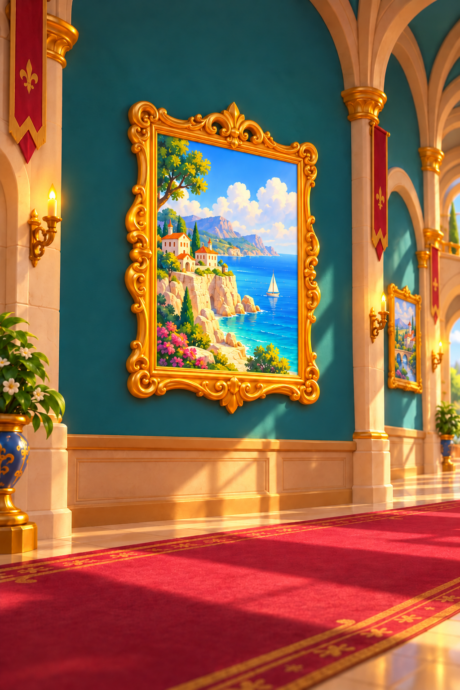
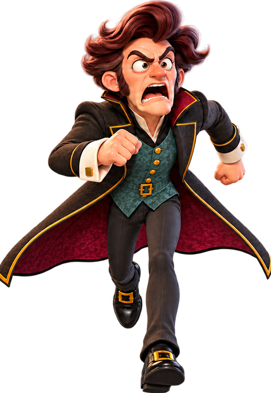
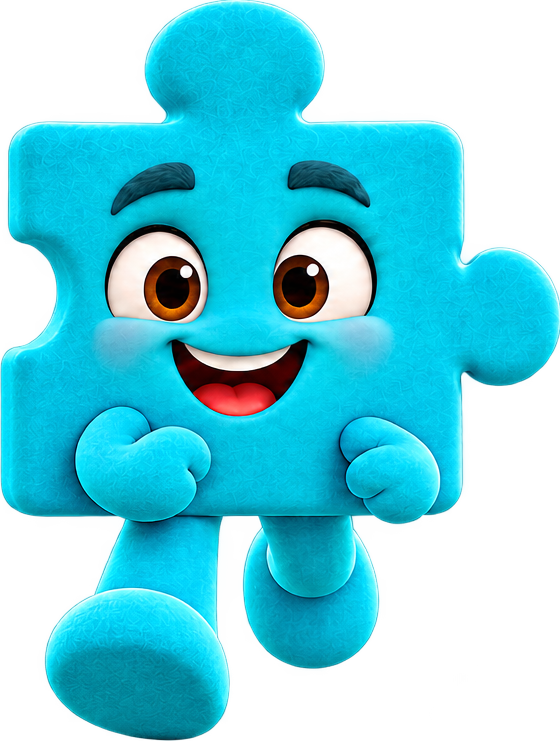

Ana açılış ekranı — kompozisyon taslağı
Zeyd’in seçtiği koridor v04, ayrı karakter PNG’leri ve bağımsız seviye tuşu.



 LEVEL 12
LEVEL 12Görsel yerleşim incelemesi. Tuşun yazısı oyunda ayrı metin olarak değişir; seviye sayısı bu PNG’ye işlenmedi.